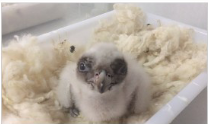

Transparencia en Andalucía
Consulta la información de la Junta de Andalucía
Lo último
- Noticias
'Kobe', el quebrantahuesos
El primer pollo nacido este año del programa de cría es andaluz, pesó 139 gramos y tiene un hermano al que han bautizado como 'Nieto' por el campeón del mundo de motociclismo
Más de 200 ofertas se presentan al nuevo modelo de cursos de Formación Profesional para el Empleo
Andalucía, a la vanguardia de la salud móvil en Europa
El Gobierno Andaluz propone el presidir el comité técnico de Medioambiente ante las negociaciones España-Reino Unido
Impulso al talento y el empleo en el Polígono Sur de Sevilla
- Novedades
- Agenda
- Recomendamos
Lo más visitado
- Servicio Andaluz de Empleo
- BOJA
- Demanda de Empleo
- Residencias de Tiempo Libre
- La Bolsa Única Común
- Citas en centros sanitarios